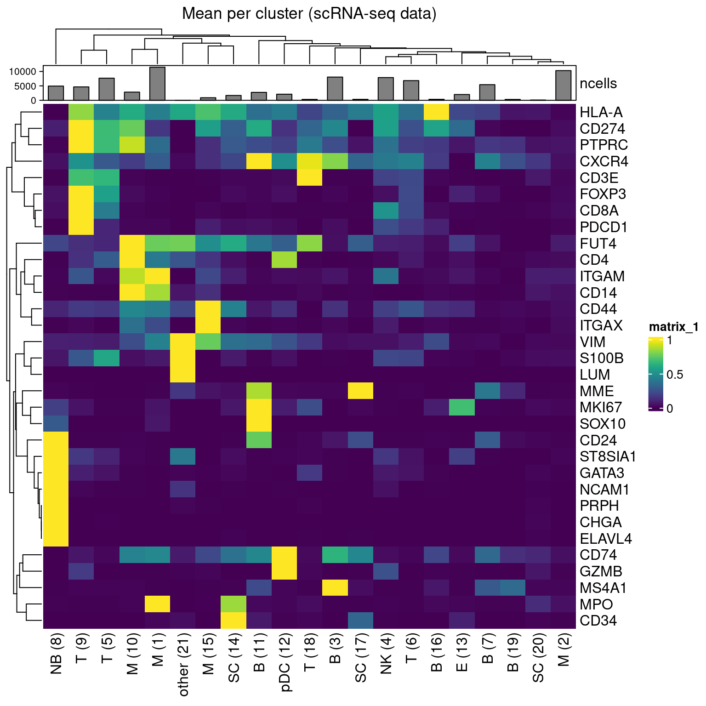
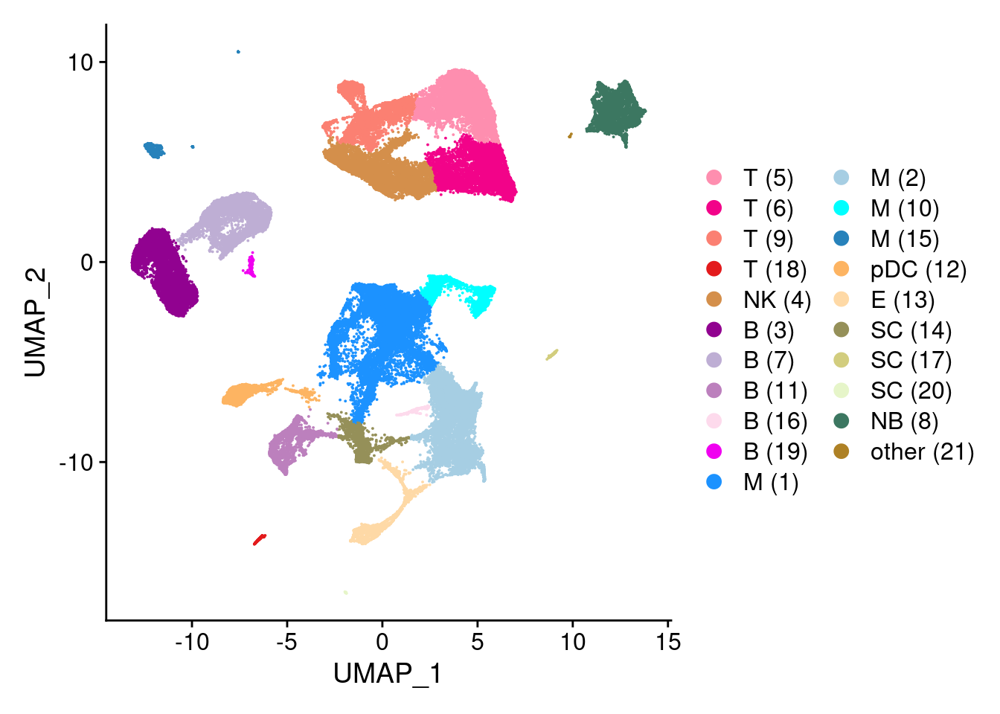
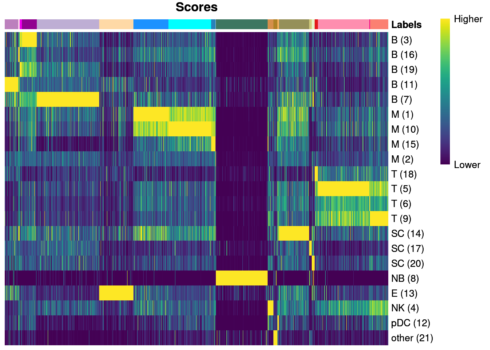
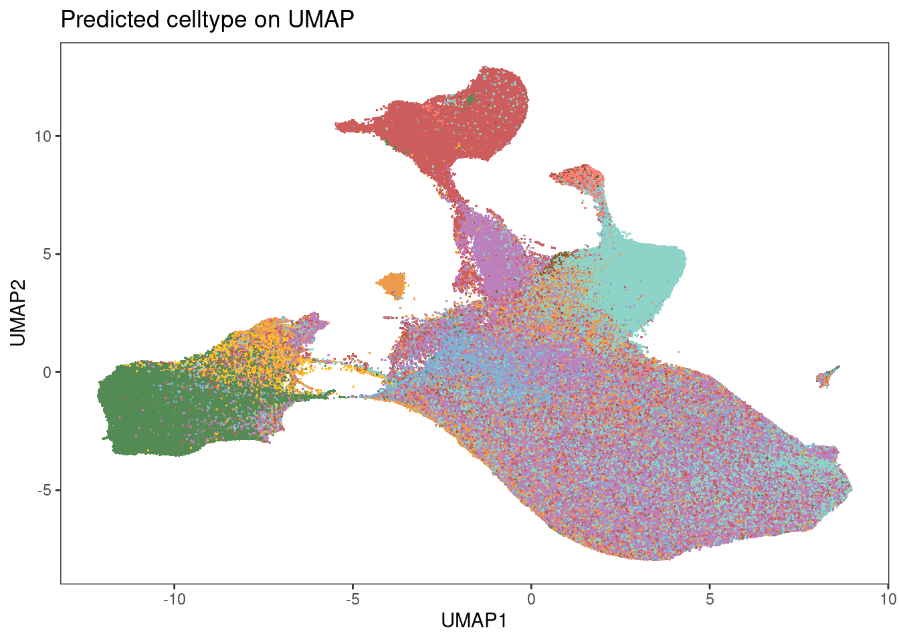

Last updated: 2024-03-28
Checks: 7 0
Knit directory: MapMetSC/
This reproducible R Markdown analysis was created with workflowr (version 1.7.1). The Checks tab describes the reproducibility checks that were applied when the results were created. The Past versions tab lists the development history.
Great! Since the R Markdown file has been committed to the Git repository, you know the exact version of the code that produced these results.
Great job! The global environment was empty. Objects defined in the global environment can affect the analysis in your R Markdown file in unknown ways. For reproduciblity it’s best to always run the code in an empty environment.
The command set.seed(20240314) was run prior to running
the code in the R Markdown file. Setting a seed ensures that any results
that rely on randomness, e.g. subsampling or permutations, are
reproducible.
Great job! Recording the operating system, R version, and package versions is critical for reproducibility.
Nice! There were no cached chunks for this analysis, so you can be confident that you successfully produced the results during this run.
Great job! Using relative paths to the files within your workflowr project makes it easier to run your code on other machines.
Great! You are using Git for version control. Tracking code development and connecting the code version to the results is critical for reproducibility.
The results in this page were generated with repository version 0ba6b0c. See the Past versions tab to see a history of the changes made to the R Markdown and HTML files.
Note that you need to be careful to ensure that all relevant files for
the analysis have been committed to Git prior to generating the results
(you can use wflow_publish or
wflow_git_commit). workflowr only checks the R Markdown
file, but you know if there are other scripts or data files that it
depends on. Below is the status of the Git repository when the results
were generated:
working directory clean
Note that any generated files, e.g. HTML, png, CSS, etc., are not included in this status report because it is ok for generated content to have uncommitted changes.
These are the previous versions of the repository in which changes were
made to the R Markdown (analysis/05_correlation_Fetahu.Rmd)
and HTML (docs/05_correlation_Fetahu.html) files. If you’ve
configured a remote Git repository (see ?wflow_git_remote),
click on the hyperlinks in the table below to view the files as they
were in that past version.
| File | Version | Author | Date | Message |
|---|---|---|---|---|
| Rmd | 0ba6b0c | LazDaria | 2024-03-28 | public_datasets |
To evaluate the validity of metacluster annnotations, we compare the cell expression profiles to our previously generated scRNA-seq dataset of NB bone marrow samples (Fetahu et al.).
library(SingleR)Loading required package: SummarizedExperimentLoading required package: MatrixGenericsLoading required package: matrixStats
Attaching package: 'MatrixGenerics'The following objects are masked from 'package:matrixStats':
colAlls, colAnyNAs, colAnys, colAvgsPerRowSet, colCollapse,
colCounts, colCummaxs, colCummins, colCumprods, colCumsums,
colDiffs, colIQRDiffs, colIQRs, colLogSumExps, colMadDiffs,
colMads, colMaxs, colMeans2, colMedians, colMins, colOrderStats,
colProds, colQuantiles, colRanges, colRanks, colSdDiffs, colSds,
colSums2, colTabulates, colVarDiffs, colVars, colWeightedMads,
colWeightedMeans, colWeightedMedians, colWeightedSds,
colWeightedVars, rowAlls, rowAnyNAs, rowAnys, rowAvgsPerColSet,
rowCollapse, rowCounts, rowCummaxs, rowCummins, rowCumprods,
rowCumsums, rowDiffs, rowIQRDiffs, rowIQRs, rowLogSumExps,
rowMadDiffs, rowMads, rowMaxs, rowMeans2, rowMedians, rowMins,
rowOrderStats, rowProds, rowQuantiles, rowRanges, rowRanks,
rowSdDiffs, rowSds, rowSums2, rowTabulates, rowVarDiffs, rowVars,
rowWeightedMads, rowWeightedMeans, rowWeightedMedians,
rowWeightedSds, rowWeightedVarsLoading required package: GenomicRangesLoading required package: stats4Loading required package: BiocGenerics
Attaching package: 'BiocGenerics'The following objects are masked from 'package:stats':
IQR, mad, sd, var, xtabsThe following objects are masked from 'package:base':
anyDuplicated, append, as.data.frame, basename, cbind, colnames,
dirname, do.call, duplicated, eval, evalq, Filter, Find, get, grep,
grepl, intersect, is.unsorted, lapply, Map, mapply, match, mget,
order, paste, pmax, pmax.int, pmin, pmin.int, Position, rank,
rbind, Reduce, rownames, sapply, setdiff, sort, table, tapply,
union, unique, unsplit, which.max, which.minLoading required package: S4Vectors
Attaching package: 'S4Vectors'The following objects are masked from 'package:base':
expand.grid, I, unnameLoading required package: IRangesLoading required package: GenomeInfoDbLoading required package: BiobaseWelcome to Bioconductor
Vignettes contain introductory material; view with
'browseVignettes()'. To cite Bioconductor, see
'citation("Biobase")', and for packages 'citation("pkgname")'.
Attaching package: 'Biobase'The following object is masked from 'package:MatrixGenerics':
rowMediansThe following objects are masked from 'package:matrixStats':
anyMissing, rowMedianslibrary(Seurat)Loading required package: SeuratObjectLoading required package: sp
Attaching package: 'sp'The following object is masked from 'package:IRanges':
%over%'SeuratObject' was built with package 'Matrix' 1.6.4 but the current
version is 1.6.5; it is recomended that you reinstall 'SeuratObject' as
the ABI for 'Matrix' may have changed
Attaching package: 'SeuratObject'The following object is masked from 'package:SummarizedExperiment':
AssaysThe following object is masked from 'package:GenomicRanges':
intersectThe following object is masked from 'package:GenomeInfoDb':
intersectThe following object is masked from 'package:IRanges':
intersectThe following object is masked from 'package:S4Vectors':
intersectThe following object is masked from 'package:BiocGenerics':
intersectThe following object is masked from 'package:base':
intersect
Attaching package: 'Seurat'The following object is masked from 'package:SummarizedExperiment':
Assayslibrary(bruceR)
bruceR (v2023.9)
Broadly Useful Convenient and Efficient R functions
Packages also loaded:
✔ data.table ✔ emmeans
✔ dplyr ✔ lmerTest
✔ tidyr ✔ effectsize
✔ stringr ✔ performance
✔ ggplot2 ✔ interactions
Main functions of `bruceR`:
cc() Describe() TTEST()
add() Freq() MANOVA()
.mean() Corr() EMMEANS()
set.wd() Alpha() PROCESS()
import() EFA() model_summary()
print_table() CFA() lavaan_summary()
For full functionality, please install all dependencies:
install.packages("bruceR", dep=TRUE)
Online documentation:
https://psychbruce.github.io/bruceR
To use this package in publications, please cite:
Bao, H.-W.-S. (2023). bruceR: Broadly useful convenient and efficient R functions (Version 2023.9) [Computer software]. https://CRAN.R-project.org/package=bruceRlibrary(ComplexHeatmap)Loading required package: grid========================================
ComplexHeatmap version 2.12.1
Bioconductor page: http://bioconductor.org/packages/ComplexHeatmap/
Github page: https://github.com/jokergoo/ComplexHeatmap
Documentation: http://jokergoo.github.io/ComplexHeatmap-reference
If you use it in published research, please cite either one:
- Gu, Z. Complex heatmaps reveal patterns and correlations in multidimensional
genomic data. Bioinformatics 2016.
- Gu, Z. Complex Heatmap Visualization. iMeta 2022.
The new InteractiveComplexHeatmap package can directly export static
complex heatmaps into an interactive Shiny app with zero effort. Have a try!
This message can be suppressed by:
suppressPackageStartupMessages(library(ComplexHeatmap))
========================================library(viridis)Loading required package: viridisLitelibrary(RColorBrewer)
library(BiocParallel)
library(dittoSeq)First, we load the processed and phenotyped single-cell data from chapter 4 and the published Seurat object
containing the scRNA-seq data. Please make sure to replace
params$publicwith the path to the scRNA-seq data.
#read IMC data
protein <- readRDS(file.path(params$output,"spe_final.rds"))
protein <- protein[rowData(protein)$use_channel,]Loading required package: SpatialExperimentLoading required package: SingleCellExperimentcol_celltype <- metadata(protein)$color_vectors$col_celltype
#read scRNA-seq data
monocle_cell_dataset <- readRDS(file.path(params$public,"Fetahu/rna_integrated_monocle.rds"))
rna <- as.Seurat(monocle_cell_dataset, data=NULL)Loading required package: monocle3
Attaching package: 'monocle3'The following objects are masked from 'package:Biobase':
exprs, fData, fData<-, pData, pData<-rna <- RenameAssays(object = rna, originalexp = 'RNA')Renaming default assay from originalexp to RNAcelltype_details <- readRDS(file.path(params$public,"Fetahu/metadata.rds"))
rna@active.ident <- setNames(pull(celltype_details[match(celltype_details$cell,colnames(rna)),"cellont_cluster"], "cellont_cluster"),
pull(celltype_details[match(celltype_details$cell,colnames(rna)), "cell"], "cell"))
DefaultAssay(rna) <- "RNA"Next, we will set common features between the reference and query dataset. Therefore, we have to rename the features in the imaging dataset to the names of the corresponding genes.
protein2gene <- read.csv(file.path(params$public,"protein2gene.csv"), sep=";")
code <- setNames(protein2gene$genes, protein2gene$protein)
rownames(protein) <- recode(rownames(protein), !!!code)
rowData(protein)$name <- rownames(protein)
rowData(protein)$channel <- rownames(protein)
#reduce metadata
metadata <- c("sample_id", "ObjectNumber", "sample", "tissue", "celltype", "metacluster")
colData(protein)[, metadata]DataFrame with 1992421 rows and 6 columns
sample_id ObjectNumber
<character> <numeric>
20210606_20210131_15-111_BM_001_4493 20210606_20210131_15.. 4493
20210606_20210131_15-111_BM_001_4500 20210606_20210131_15.. 4500
20210606_20210131_15-111_BM_001_4511 20210606_20210131_15.. 4511
20210606_20210131_15-111_BM_001_4512 20210606_20210131_15.. 4512
20210606_20210131_15-111_BM_001_4513 20210606_20210131_15.. 4513
... ... ...
20221028_20221019_20-129_BM_007_6826 20221028_20221019_20.. 6826
20221028_20221019_20-129_BM_007_6834 20221028_20221019_20.. 6834
20221028_20221019_20-129_BM_007_6836 20221028_20221019_20.. 6836
20221028_20221019_20-129_BM_007_6837 20221028_20221019_20.. 6837
20221028_20221019_20-129_BM_007_6840 20221028_20221019_20.. 6840
sample tissue
<character> <character>
20210606_20210131_15-111_BM_001_4493 20210606_20210131_15.. BM
20210606_20210131_15-111_BM_001_4500 20210606_20210131_15.. BM
20210606_20210131_15-111_BM_001_4511 20210606_20210131_15.. BM
20210606_20210131_15-111_BM_001_4512 20210606_20210131_15.. BM
20210606_20210131_15-111_BM_001_4513 20210606_20210131_15.. BM
... ... ...
20221028_20221019_20-129_BM_007_6826 20221028_20221019_20.. BM
20221028_20221019_20-129_BM_007_6834 20221028_20221019_20.. BM
20221028_20221019_20-129_BM_007_6836 20221028_20221019_20.. BM
20221028_20221019_20-129_BM_007_6837 20221028_20221019_20.. BM
20221028_20221019_20-129_BM_007_6840 20221028_20221019_20.. BM
celltype metacluster
<character> <character>
20210606_20210131_15-111_BM_001_4493 band cell granulocyte
20210606_20210131_15-111_BM_001_4500 CD14+ PDL1- MO MO/DC/NK
20210606_20210131_15-111_BM_001_4511 myelocyte granulocyte
20210606_20210131_15-111_BM_001_4512 myelocyte granulocyte
20210606_20210131_15-111_BM_001_4513 myeloblast granulocyte
... ... ...
20221028_20221019_20-129_BM_007_6826 CD14- PDL1- MO/DC MO/DC/NK
20221028_20221019_20-129_BM_007_6834 CD14+ PDL1+ MO MO/DC/NK
20221028_20221019_20-129_BM_007_6836 LIN- Ki67+ progenitor
20221028_20221019_20-129_BM_007_6837 monoblast-like MO/DC/NK
20221028_20221019_20-129_BM_007_6840 myelocyte granulocytecolData(protein) <- colData(protein)[, metadata]
common_features <- intersect(row.names(rna), row.names(protein))Will will first visualize the scRNA-seq data. Therefore we first define a color code with similar colors for similar celltypes between IMC and scRNA-seq.
col_clusters <- c("B (3)" = rgb(145,2,144, maxColorValue = 255),
"B (16)" = rgb(253,218,236, maxColorValue = 255),
"B (19)" = rgb(240,0,240, maxColorValue = 255),
"B (11)" = rgb(188,128,189, maxColorValue = 255),
"B (7)" = rgb(190,174,212, maxColorValue = 255),
"M (1)" = rgb(28,146,255, maxColorValue = 255),
"M (10)" = rgb(0,255,255, maxColorValue = 255),
"M (15)" = rgb(39,130,187, maxColorValue = 255),
"M (2)" = rgb(166,206,227, maxColorValue = 255),
"T (18)" = rgb(227,26,28, maxColorValue = 255),
"T (5)" = rgb(254,142,175, maxColorValue = 255),
"T (6)" = rgb(242,3,137, maxColorValue = 255),
"T (9)" = rgb(251,128,114, maxColorValue = 255),
"SC (14)" =rgb(149,144,89, maxColorValue = 255),
"SC (17)" =rgb(210,205,126, maxColorValue = 255),
"SC (20)" = rgb(230,245,201, maxColorValue = 255),
"NB (8)" = rgb(60,119,97, maxColorValue = 255),
"E (13)" = rgb(254,217,166, maxColorValue = 255),
"NK (4)" = rgb(212,143,75, maxColorValue = 255),
"pDC (12)" = rgb(253,180,98, maxColorValue = 255),
"other (21)" = rgb(174,129,37, maxColorValue = 255)) rna_clusters <- rna@active.ident
rna_data <- GetAssayData(rna, assay = "RNA", slot = "data")[common_features, ]
rna_mean <- aggregate(t(rna_data), list(rna_clusters), mean)
rna_mean_t <- t(rna_mean[,2:ncol(rna_mean)])
colnames(rna_mean_t) <- rna_mean[,"Group.1"]
rna_mean_scaled <- t(apply(rna_mean_t, 1, RESCALE, to=0:1))
column_ha = HeatmapAnnotation(ncells=anno_barplot(as.data.frame(table(rna_clusters))[,"Freq"], height = unit(1, "cm")),
show_legend=F)
Heatmap(rna_mean_scaled,
column_title = "Mean per cluster (scRNA-seq data)",
top_annotation = column_ha,
cluster_columns=T,
show_column_dend = T,
show_column_names=T,
show_row_names=T,
col=viridis(100)
)
DimPlot(rna, reduction="UMAP", cols=col_clusters)
Finally, we will investigate correlation between the datasets using label transfer by singleR.
rna_mat <- GetAssayData(rna, assay = "RNA", slot = "data")[common_features, ]
rna_clusters <- rna@active.ident
protein_mat <- assay(protein, "counts")[common_features, ]
predicted_labels <- SingleR(test = protein_mat, ref = rna_mat, labels = rna_clusters, BPPARAM = MulticoreParam(workers=10, RNGseed=20231030))
plotScoreHeatmap(predicted_labels[sample(seq_len(nrow(predicted_labels)), 2000),],annotation_colors=list(Labels = col_clusters), annotation_legend=F, treeheight_row=0,
rows.order=names(col_clusters)) 
protein$predicted_celltype <- predicted_labels$labelsFor visualization purposes, we rename the predicted celltypes to their metacluster and assign colors.
protein$predicted_metacluster <- sub(" \\(.*$", "", protein$predicted_celltype)
col_metacluster <- c("NB"="palegreen4",
"NK"="#FB8072",
"T"="indianred",
"E"="#80B1D3",
"M"="#8DD3C7",
"B"="#BC80BD",
"other"="goldenrod1",
"pDC"="tan4",
"SC"="tan2"
)
metadata(protein)$color_vectors$col_predicted_meta <- col_metaclusterWe will plot the predicted metalabels in a UMAP.
p1 <- dittoDimPlot(protein, var = "predicted_metacluster",
reduction.use = "UMAP", size = 0.3, labels.size=2,
do.label = F,
legend.show=F) +
scale_color_manual(values = metadata(protein)$color_vectors$col_predicted_meta) +
theme(legend.title = element_blank()) +
ggtitle("Predicted celltype on UMAP")Scale for colour is already present.
Adding another scale for colour, which will replace the existing scale.p1
R version 4.2.0 (2022-04-22)
Platform: x86_64-pc-linux-gnu (64-bit)
Running under: Ubuntu 20.04.4 LTS
Matrix products: default
BLAS: /usr/lib/x86_64-linux-gnu/openblas-pthread/libblas.so.3
LAPACK: /usr/lib/x86_64-linux-gnu/openblas-pthread/liblapack.so.3
locale:
[1] LC_CTYPE=en_US.UTF-8 LC_NUMERIC=C
[3] LC_TIME=en_US.UTF-8 LC_COLLATE=en_US.UTF-8
[5] LC_MONETARY=en_US.UTF-8 LC_MESSAGES=en_US.UTF-8
[7] LC_PAPER=en_US.UTF-8 LC_NAME=C
[9] LC_ADDRESS=C LC_TELEPHONE=C
[11] LC_MEASUREMENT=en_US.UTF-8 LC_IDENTIFICATION=C
attached base packages:
[1] grid stats4 stats graphics grDevices utils datasets
[8] methods base
other attached packages:
[1] monocle3_1.3.1 SpatialExperiment_1.6.1
[3] SingleCellExperiment_1.20.1 dittoSeq_1.8.1
[5] BiocParallel_1.30.4 RColorBrewer_1.1-3
[7] viridis_0.6.4 viridisLite_0.4.2
[9] ComplexHeatmap_2.12.1 ggplot2_3.4.4
[11] interactions_1.1.5 lmerTest_3.1-3
[13] lme4_1.1-35.1 Matrix_1.6-5
[15] performance_0.10.8 effectsize_0.8.6
[17] emmeans_1.9.0 data.table_1.14.10
[19] stringr_1.5.1 tidyr_1.3.0
[21] dplyr_1.1.4 bruceR_2023.9
[23] Seurat_5.0.1 SeuratObject_5.0.1
[25] sp_2.1-2 SingleR_1.10.0
[27] SummarizedExperiment_1.26.1 Biobase_2.56.0
[29] GenomicRanges_1.48.0 GenomeInfoDb_1.32.4
[31] IRanges_2.30.1 S4Vectors_0.34.0
[33] BiocGenerics_0.42.0 MatrixGenerics_1.8.1
[35] matrixStats_1.1.0 workflowr_1.7.1
loaded via a namespace (and not attached):
[1] estimability_1.4.1 scattermore_1.2
[3] R.methodsS3_1.8.2 coda_0.19-4
[5] knitr_1.45 R.utils_2.12.3
[7] irlba_2.3.5.1 multcomp_1.4-25
[9] DelayedArray_0.22.0 RCurl_1.98-1.14
[11] doParallel_1.0.17 generics_0.1.3
[13] ScaledMatrix_1.4.1 terra_1.7-65
[15] callr_3.7.3 cowplot_1.1.2
[17] TH.data_1.1-2 RANN_2.6.1
[19] future_1.33.1 spatstat.data_3.0-4
[21] httpuv_1.6.13 xfun_0.41
[23] jquerylib_0.1.4 evaluate_0.23
[25] promises_1.2.1 fansi_1.0.6
[27] igraph_1.6.0 htmlwidgets_1.6.4
[29] spatstat.geom_3.2-7 purrr_1.0.2
[31] ellipsis_0.3.2 RSpectra_0.16-1
[33] insight_0.19.7 deldir_2.0-2
[35] sparseMatrixStats_1.8.0 vctrs_0.6.5
[37] Cairo_1.6-2 ROCR_1.0-11
[39] abind_1.4-5 cachem_1.0.8
[41] withr_3.0.0 progressr_0.14.0
[43] sctransform_0.4.1 goftest_1.2-3
[45] cluster_2.1.3 dotCall64_1.1-1
[47] lazyeval_0.2.2 crayon_1.5.2
[49] spatstat.explore_3.2-5 labeling_0.4.3
[51] edgeR_3.38.4 pkgconfig_2.0.3
[53] nlme_3.1-157 rlang_1.1.3
[55] globals_0.16.2 lifecycle_1.0.4
[57] miniUI_0.1.1.1 sandwich_3.1-0
[59] fastDummies_1.7.3 rsvd_1.0.5
[61] rprojroot_2.0.4 polyclip_1.10-6
[63] RcppHNSW_0.5.0 lmtest_0.9-40
[65] datawizard_0.9.1 Rhdf5lib_1.18.2
[67] boot_1.3-28 zoo_1.8-12
[69] whisker_0.4.1 ggridges_0.5.5
[71] GlobalOptions_0.1.2 processx_3.8.3
[73] pheatmap_1.0.12 png_0.1-8
[75] rjson_0.2.21 parameters_0.21.3
[77] bitops_1.0-7 R.oo_1.25.0
[79] getPass_0.2-4 KernSmooth_2.23-20
[81] spam_2.10-0 rhdf5filters_1.8.0
[83] pander_0.6.5 DelayedMatrixStats_1.18.2
[85] shape_1.4.6 parallelly_1.36.0
[87] spatstat.random_3.2-2 beachmat_2.12.0
[89] scales_1.3.0 magrittr_2.0.3
[91] plyr_1.8.9 ica_1.0-3
[93] zlibbioc_1.42.0 compiler_4.2.0
[95] dqrng_0.3.2 clue_0.3-65
[97] fitdistrplus_1.1-11 cli_3.6.2
[99] XVector_0.36.0 listenv_0.9.0
[101] patchwork_1.2.0 pbapply_1.7-2
[103] ps_1.7.6 MASS_7.3-56
[105] tidyselect_1.2.0 stringi_1.8.3
[107] highr_0.10 jtools_2.2.2
[109] yaml_2.3.8 locfit_1.5-9.8
[111] BiocSingular_1.12.0 ggrepel_0.9.5
[113] sass_0.4.8 tools_4.2.0
[115] future.apply_1.11.1 parallel_4.2.0
[117] circlize_0.4.15 rstudioapi_0.15.0
[119] foreach_1.5.2 git2r_0.33.0
[121] gridExtra_2.3 farver_2.1.1
[123] Rtsne_0.17 DropletUtils_1.16.0
[125] digest_0.6.34 shiny_1.8.0
[127] Rcpp_1.0.12 scuttle_1.6.3
[129] later_1.3.2 RcppAnnoy_0.0.21
[131] httr_1.4.7 colorspace_2.1-0
[133] fs_1.6.3 tensor_1.5
[135] reticulate_1.34.0 splines_4.2.0
[137] uwot_0.1.16 spatstat.utils_3.0-4
[139] plotly_4.10.4 xtable_1.8-4
[141] jsonlite_1.8.8 nloptr_2.0.3
[143] R6_2.5.1 pillar_1.9.0
[145] htmltools_0.5.7 mime_0.12
[147] glue_1.7.0 fastmap_1.1.1
[149] minqa_1.2.6 BiocNeighbors_1.14.0
[151] codetools_0.2-18 mvtnorm_1.2-4
[153] utf8_1.2.4 lattice_0.20-45
[155] bslib_0.6.1 spatstat.sparse_3.0-3
[157] tibble_3.2.1 numDeriv_2016.8-1.1
[159] leiden_0.4.3.1 magick_2.8.2
[161] limma_3.52.4 survival_3.3-1
[163] rmarkdown_2.25 munsell_0.5.0
[165] GetoptLong_1.0.5 rhdf5_2.40.0
[167] GenomeInfoDbData_1.2.8 iterators_1.0.14
[169] HDF5Array_1.24.2 reshape2_1.4.4
[171] gtable_0.3.4 bayestestR_0.13.1
sessionInfo()R version 4.2.0 (2022-04-22)
Platform: x86_64-pc-linux-gnu (64-bit)
Running under: Ubuntu 20.04.4 LTS
Matrix products: default
BLAS: /usr/lib/x86_64-linux-gnu/openblas-pthread/libblas.so.3
LAPACK: /usr/lib/x86_64-linux-gnu/openblas-pthread/liblapack.so.3
locale:
[1] LC_CTYPE=en_US.UTF-8 LC_NUMERIC=C
[3] LC_TIME=en_US.UTF-8 LC_COLLATE=en_US.UTF-8
[5] LC_MONETARY=en_US.UTF-8 LC_MESSAGES=en_US.UTF-8
[7] LC_PAPER=en_US.UTF-8 LC_NAME=C
[9] LC_ADDRESS=C LC_TELEPHONE=C
[11] LC_MEASUREMENT=en_US.UTF-8 LC_IDENTIFICATION=C
attached base packages:
[1] grid stats4 stats graphics grDevices utils datasets
[8] methods base
other attached packages:
[1] monocle3_1.3.1 SpatialExperiment_1.6.1
[3] SingleCellExperiment_1.20.1 dittoSeq_1.8.1
[5] BiocParallel_1.30.4 RColorBrewer_1.1-3
[7] viridis_0.6.4 viridisLite_0.4.2
[9] ComplexHeatmap_2.12.1 ggplot2_3.4.4
[11] interactions_1.1.5 lmerTest_3.1-3
[13] lme4_1.1-35.1 Matrix_1.6-5
[15] performance_0.10.8 effectsize_0.8.6
[17] emmeans_1.9.0 data.table_1.14.10
[19] stringr_1.5.1 tidyr_1.3.0
[21] dplyr_1.1.4 bruceR_2023.9
[23] Seurat_5.0.1 SeuratObject_5.0.1
[25] sp_2.1-2 SingleR_1.10.0
[27] SummarizedExperiment_1.26.1 Biobase_2.56.0
[29] GenomicRanges_1.48.0 GenomeInfoDb_1.32.4
[31] IRanges_2.30.1 S4Vectors_0.34.0
[33] BiocGenerics_0.42.0 MatrixGenerics_1.8.1
[35] matrixStats_1.1.0 workflowr_1.7.1
loaded via a namespace (and not attached):
[1] estimability_1.4.1 scattermore_1.2
[3] R.methodsS3_1.8.2 coda_0.19-4
[5] knitr_1.45 R.utils_2.12.3
[7] irlba_2.3.5.1 multcomp_1.4-25
[9] DelayedArray_0.22.0 RCurl_1.98-1.14
[11] doParallel_1.0.17 generics_0.1.3
[13] ScaledMatrix_1.4.1 terra_1.7-65
[15] callr_3.7.3 cowplot_1.1.2
[17] TH.data_1.1-2 RANN_2.6.1
[19] future_1.33.1 spatstat.data_3.0-4
[21] httpuv_1.6.13 xfun_0.41
[23] jquerylib_0.1.4 evaluate_0.23
[25] promises_1.2.1 fansi_1.0.6
[27] igraph_1.6.0 htmlwidgets_1.6.4
[29] spatstat.geom_3.2-7 purrr_1.0.2
[31] ellipsis_0.3.2 RSpectra_0.16-1
[33] insight_0.19.7 deldir_2.0-2
[35] sparseMatrixStats_1.8.0 vctrs_0.6.5
[37] Cairo_1.6-2 ROCR_1.0-11
[39] abind_1.4-5 cachem_1.0.8
[41] withr_3.0.0 progressr_0.14.0
[43] sctransform_0.4.1 goftest_1.2-3
[45] cluster_2.1.3 dotCall64_1.1-1
[47] lazyeval_0.2.2 crayon_1.5.2
[49] spatstat.explore_3.2-5 labeling_0.4.3
[51] edgeR_3.38.4 pkgconfig_2.0.3
[53] nlme_3.1-157 rlang_1.1.3
[55] globals_0.16.2 lifecycle_1.0.4
[57] miniUI_0.1.1.1 sandwich_3.1-0
[59] fastDummies_1.7.3 rsvd_1.0.5
[61] rprojroot_2.0.4 polyclip_1.10-6
[63] RcppHNSW_0.5.0 lmtest_0.9-40
[65] datawizard_0.9.1 Rhdf5lib_1.18.2
[67] boot_1.3-28 zoo_1.8-12
[69] whisker_0.4.1 ggridges_0.5.5
[71] GlobalOptions_0.1.2 processx_3.8.3
[73] pheatmap_1.0.12 png_0.1-8
[75] rjson_0.2.21 parameters_0.21.3
[77] bitops_1.0-7 R.oo_1.25.0
[79] getPass_0.2-4 KernSmooth_2.23-20
[81] spam_2.10-0 rhdf5filters_1.8.0
[83] pander_0.6.5 DelayedMatrixStats_1.18.2
[85] shape_1.4.6 parallelly_1.36.0
[87] spatstat.random_3.2-2 beachmat_2.12.0
[89] scales_1.3.0 magrittr_2.0.3
[91] plyr_1.8.9 ica_1.0-3
[93] zlibbioc_1.42.0 compiler_4.2.0
[95] dqrng_0.3.2 clue_0.3-65
[97] fitdistrplus_1.1-11 cli_3.6.2
[99] XVector_0.36.0 listenv_0.9.0
[101] patchwork_1.2.0 pbapply_1.7-2
[103] ps_1.7.6 MASS_7.3-56
[105] tidyselect_1.2.0 stringi_1.8.3
[107] highr_0.10 jtools_2.2.2
[109] yaml_2.3.8 locfit_1.5-9.8
[111] BiocSingular_1.12.0 ggrepel_0.9.5
[113] sass_0.4.8 tools_4.2.0
[115] future.apply_1.11.1 parallel_4.2.0
[117] circlize_0.4.15 rstudioapi_0.15.0
[119] foreach_1.5.2 git2r_0.33.0
[121] gridExtra_2.3 farver_2.1.1
[123] Rtsne_0.17 DropletUtils_1.16.0
[125] digest_0.6.34 shiny_1.8.0
[127] Rcpp_1.0.12 scuttle_1.6.3
[129] later_1.3.2 RcppAnnoy_0.0.21
[131] httr_1.4.7 colorspace_2.1-0
[133] fs_1.6.3 tensor_1.5
[135] reticulate_1.34.0 splines_4.2.0
[137] uwot_0.1.16 spatstat.utils_3.0-4
[139] plotly_4.10.4 xtable_1.8-4
[141] jsonlite_1.8.8 nloptr_2.0.3
[143] R6_2.5.1 pillar_1.9.0
[145] htmltools_0.5.7 mime_0.12
[147] glue_1.7.0 fastmap_1.1.1
[149] minqa_1.2.6 BiocNeighbors_1.14.0
[151] codetools_0.2-18 mvtnorm_1.2-4
[153] utf8_1.2.4 lattice_0.20-45
[155] bslib_0.6.1 spatstat.sparse_3.0-3
[157] tibble_3.2.1 numDeriv_2016.8-1.1
[159] leiden_0.4.3.1 magick_2.8.2
[161] limma_3.52.4 survival_3.3-1
[163] rmarkdown_2.25 munsell_0.5.0
[165] GetoptLong_1.0.5 rhdf5_2.40.0
[167] GenomeInfoDbData_1.2.8 iterators_1.0.14
[169] HDF5Array_1.24.2 reshape2_1.4.4
[171] gtable_0.3.4 bayestestR_0.13.1